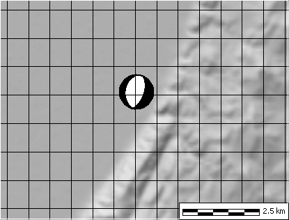
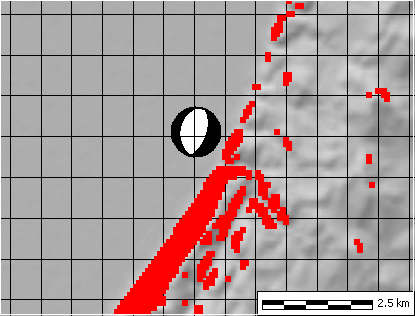
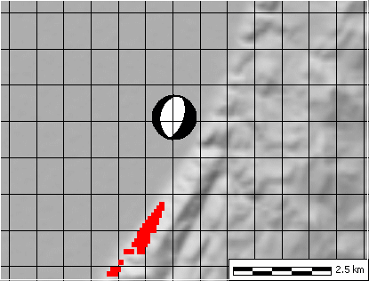
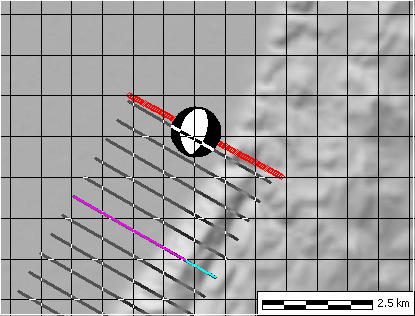

The location in a valley adjacent to a mountain front strongly suggests a range front scarp. It would also suggest that the west dipping plane is the fault plane, and the east dipping plane is the auxiliary plane. The strike of the fault plane should be close to the orientation of the range front topography, and is about N20E.
The dip of the fault plane might be close to the slope of the range front, although erosion might decrease the slope over time.

"Calculate" menu, Slopes, Excessive slope. This exaggerates the number of points but rapidly find points that exceed a particular slope. This can help to pick slopes to show on the Focal plane analysis.
Note here that the range front is steeper than the regions to the east.


Locations for cross sections shown below.
-
 Topographic
Profile (below) shown by the red line.
Topographic
Profile (below) shown by the red line. - Multiple parallel profiles. The purple/cyan profile was drawn, and then 5 parallel profiles were drawn on each side.
You always want to draw the cross sections perpendicular to the range front and the presumed fault trace.